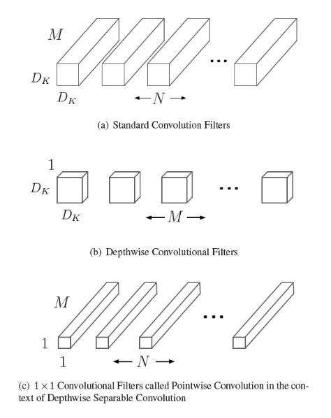
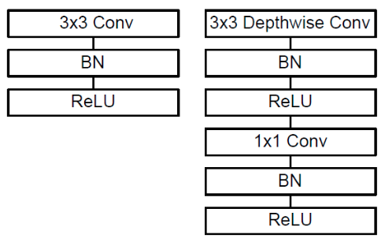
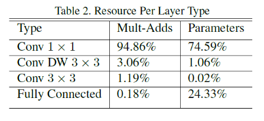
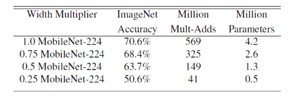
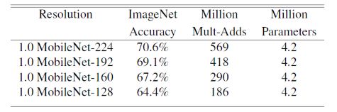

论文：MobileNets: Efficient Convolutional Neural Networks for Mobile Vision Applications
MobileNets是用深度可分离卷积 depthwise separable convolutions 构建的轻量级网络。对于移动、车载应用，需要将模型小型化，使模型的计算量存储空间能耗能够被这些应用接受。
depthwise卷积是减少了传统卷积的冗余信息，是更稀疏的表达，可以通过调整两个超参数（宽度因子width muiltiplier 和 分辨率因子 resolution multiplier ）来构建复杂度小，速度快，能够满足嵌入式设备要求的模型。
1. depthwise separable convolutions
对于传统卷积，假设输入是M x H x W，kernel size为D x D，输出channel数为N，那么一个卷积核的计算量为 $D \times D \times M \times H \times W$
depthwise 卷积是先用一组通道数为1的二维的卷积核，每次只处理一个输入通道，卷积核的数量和输入通道数相同。逐个通道卷积处理完后，再经过三维的1x1的卷积核：

在计算量上，用一组二维 的DxD 卷积核逐个对通道卷积的计算量为 $D\times D \times H \times W \times M$ ；之后三维的1x1卷积核的计算量是 $H \times W \times M \times N$ ，两部分合起来的计算量是：
相比传统卷积：
也就是说，当输入是3x112x112，kernel size为3x3，卷积核数量是128时，depthwise卷积+1x1conv只有传统卷积计算量的11.89%
depthwise 卷积和1x1卷积在网络结构中作为两个独立的模块，每部分输出都加了BN 和 ReLU：

MobileNet 中的参数量和计算量的分布：

2. 宽度因子和分辨率因子
通过宽度因子和分辨率因子，可以用最小的改动来获得更小更快的模型，以满足对运行速度和内存有极端要求的应用。
用宽度因子和分辨率因子调整后是需要重新训练网络的。
2.1 宽度因子 width multiplier $\alpha$
$\alpha$ 取值范围 $(, 1]$ ，常用取值为1、0.75、0.5、0.25，作用于网络的通道数，可以有效把计算量和参数量减少约 $\alpha$ 的平方倍，使用了 $\alpha$ 的depth wise + 1x1 卷积核的计算量为：

2.2 分辨率因子 resolution multiplier $\beta$
$\beta$ 取值范围 $(, 1]$ ，作用于网络输入数据的大小，每个模块产生的特征图都变小，使用了 $\beta$ 的depth wise + 1x1 卷积核的计算量为：

3. 训练细节和实验结果
- MobileNet 参数量较少，所以不用weight decay 或用较小的weight decay；
- 因为网络较小不会有严重过拟合问题，所以没有做很多数据增强的工作。